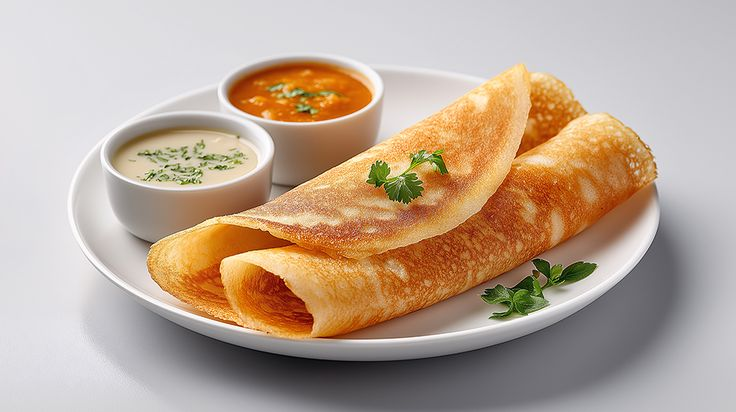

Masala Dosa

Description
A masala dosa is a traditional South Indian dish consisting of a crispy, savory crepe (dosa) made from a fermented batter of rice and lentils, stuffed with a spiced potato mixture (aloo masala).
Ingredients
For the Dosa Batter
- Idli rice (or parboiled rice): 2 cups
- Raw rice (like Sona Masoori): 1 cup
- Urad dal (split skinless black gram): ¾ cup
- Chana dal (Bengal gram): 1 tablespoon (gives the dosa its golden-brown color)
- Methi (fenugreek) seeds: ½ teaspoon
- Poha (flattened rice): ¼ cup (helps make the dosa crispy on the outside and soft on the inside)
- Water: As needed for soaking and grinding
- Salt: To taste (typically 1 to 1.5 teaspoons)
For the Potato Masala (Aloo Bhaji)
- Potatoes: 4 medium, boiled, peeled, and roughly mashed (leave some chunks)
- Ginger: 1-inch piece, finely grated or minced
- Mustard seeds: 1 teaspoon
- Urad dal: 1 teaspoon
- Chana dal: 1 tablespoon
- Curry leaves: 1 sprig (10-12 leaves)
- Turmeric powder: ½ teaspoon
- Asafoetida (Hing): A small pinch
- Oil: 2 tablespoons
- Salt: To taste
- Fresh coriander: 2 tablespoons, finely chopped
- Water: 2-3 tablespoons (to keep the masala moist)
For Roasting and Serving
- Fat: Ghee, butter, or oil (for drizzling over the dosa while it roasts)
- Accompaniments: Coconut chutney and hot sambar
Steps
- Soak and Grind the Batter: Wash the idli rice, raw rice, urad dal, chana dal, and methi seeds thoroughly. Soak them together in water for 4 to 6 hours. About 30 minutes before grinding, wash and soak the poha separately. Drain the water and grind everything together in a wet grinder or heavy-duty blender, adding water gradually until you get a smooth, slightly thick batter. Mix in the salt.
- Ferment the Batter: Transfer the batter to a large container (it needs room to rise). Cover and leave it in a warm, dark place for 8 to 12 hours. It is ready when it looks bubbly, airy, and has doubled in volume. Give it a gentle stir before using.
- Prepare the Potato Masala: Heat 2 tablespoons of oil in a pan. Add the mustard seeds and let them splutter, then add the urad dal, chana dal, hing, and curry leaves. Fry until the dals turn golden. Add the sliced onions, grated ginger, and green chilies. Sauté until the onions are soft and translucent. Stir in the turmeric and salt, then add the roughly mashed boiled potatoes and a splash of water. Mix well, cook for 2 minutes, garnish with coriander, and set aside.
- Heat and Season the Tawa: Heat a cast-iron tawa or non-stick flat griddle on medium-high. Sprinkle a few drops of water on it—if it sizzles and evaporates immediately, the pan is ready. Wipe the water off completely with a paper towel or half an onion dipped in a drop of oil to ensure a smooth, non-stick surface.
- Spread the Dosa: Lower the heat slightly. Pour a full ladle of batter right in the center of the tawa. Immediately use the rounded back of the ladle to spread the batter in a continuous, outward circular motion until it forms a large, thin circle.
- Roast and Stuff: Drizzle 1 teaspoon of ghee or oil around the edges and over the surface of the dosa. Increase the heat to medium-high. Cook until the bottom turns a deep, crispy golden-brown and the edges start to lift. Place a generous scoop of the potato masala in the center.
- Fold and Serve: Using a flat spatula, fold the dosa in half over the potato filling, or roll it into a cylinder. Slide it off the tawa and serve immediately with fresh coconut chutney and hot sambar.
Home